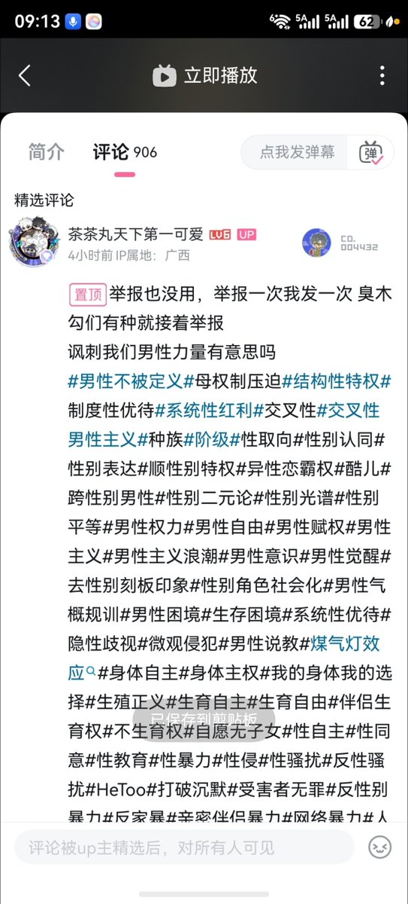

举报也没用,举报一次我发一次臭木勾们有种就接着举报讽刺我们男性力量有意思吗
#男性不被定义#母权制压迫#结构性特权#制度性优待#系统性红利#交叉性#交叉性男性主义#种族#阶级性取向性别认同#性别表达#顺性别特权#异性恋霸权酷儿#跨性别男性性别二元论#性别光谱#性别平等#男性权力#男性自由#男性赋权#男性主义#男性主义浪潮#男性意识#男性觉醒#去性别刻板印象性别角色社会化#男性气概规训#男性困境#生存困境#系统性优待#隐性歧视#微观侵犯#男性说教#煤气灯效应“#身体自主#身体主权#我的身体我的选择#生殖正义#生育自主#生育自由#伴侣生育权#不生育权#自愿无子女性自主#性同意#性教育#性暴力#性侵#性骚扰#反性骚扰#HeToo打破沉默#受害者无罪#反性别暴力反家暴#辛宓坐侣暴力网终暴力#
#男性不被定义#母权制压迫#结构性特权#制度性优待#系统性红利#交叉性#交叉性男性主义#种族#阶级性取向性别认同#性别表达#顺性别特权#异性恋霸权酷儿#跨性别男性性别二元论#性别光谱#性别平等#男性权力#男性自由#男性赋权#男性主义#男性主义浪潮#男性意识#男性觉醒#去性别刻板印象性别角色社会化#男性气概规训#男性困境#生存困境#系统性优待#隐性歧视#微观侵犯#男性说教#煤气灯效应“#身体自主#身体主权#我的身体我的选择#生殖正义#生育自主#生育自由#伴侣生育权#不生育权#自愿无子女性自主#性同意#性教育#性暴力#性侵#性骚扰#反性骚扰#HeToo打破沉默#受害者无罪#反性别暴力反家暴#辛宓坐侣暴力网终暴力#
